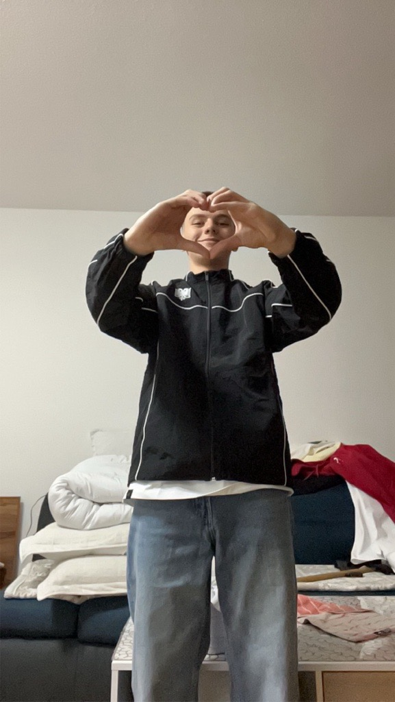

Ein bisschen über mich
Ich heiße Amar Jashari und bin IMS-Schüler. Dieses Jahr habe ich die IMS angefangen und freue mich auf meine Zukunft. Ich möchte später ein sehr guter Informatiker werden. HTML und CSS gefallen mir besonders gut, weil man damit seine eigenen Ideen frei umsetzen kann. Ich bin neugierig, lerne gerne Neues und habe Spaß daran, kreative Ideen digital zum Leben zu erwecken.
Meine Schullaufbahn
2015 – 2021
Schulhaus Breite
Reinach AG
In der Primarschule habe ich die schulischen Grundlagen gelernt – wie Lesen, Rechnen und Schreiben. Ich erinnere mich gerne an die Freundschaften, Ausflüge und Projekte aus dieser Zeit zurück.
2021 – 2024
Kreisschule aargauSüd
Unterkulm
In der Oberstufe habe ich meine Interessen für Technik und Informatik entdeckt. Dort habe ich mit ersten Programmierversuchen begonnen und gemerkt, dass mir logisches Denken und digitale Themen Spaß machen.
Seit 2024
Alte Kantonsschule Aarau
Berufsfachschule BBB Baden
Seit Beginn der IMS lerne ich professionelle Informatikkenntnisse – von Webentwicklung mit HTML & CSS bis zu C#-Projekten in WinForms. Besonders stolz bin ich auf meine ersten Spiele wie Snake oder TicTacToe.
Meine Hobbys

Fussball
Ich spiele Fußball, seit ich ein kleiner Junge bin. Sport ist für mich sehr wichtig, und ich spiele auch in einem Verein mit Freunden. Außerdem schaue ich gerne Fußball mit meiner Familie.

Gaming
Gamen macht mir auch sehr viel Spaß. Am liebsten spiele ich FIFA, weil ich Fußball mag und das Spiel eine gute Verbindung zu meinem Hobby herstellt. Es hilft mir, abzuschalten und mit Freunden Spaß zu haben.
Kontakt
Wenn du Fragen hast oder einfach Hallo sagen möchtest, schreib mir gerne: